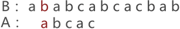
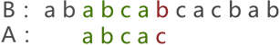
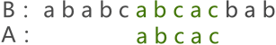
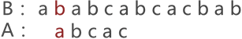
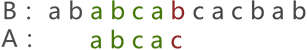
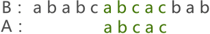

BF算法（串模式匹配算法）C语言详解
串的模式匹配算法，通俗地理解，是一种用来判断两个串之间是否具有"主串与子串"关系的算法。
主串与子串：如果串 A（如 "shujujiegou"）中包含有串 B（如 "ju"），则称串 A 为主串，串 B 为子串。主串与子串之间的关系可简单理解为一个串 "包含" 另一个串的关系。
实现串的模式匹配的算法主要有以下两种：
本节，先来学习普通模式匹配（BF）算法的实现。
例如，使用普通模式匹配算法判断串 A（"abcac"）是否为串 B（"ababcabacabab"）子串的判断过程如下：
首先，将串 A 与串 B 的首字符对齐，然后逐个判断相对的字符是否相等，如图 1 所示：

图 1 串的第一次模式匹配示意图
图 1 中，由于串 A 与串 B 的第 3 个字符匹配失败，因此需要将串 A 后移一个字符的位置，继续同串 B 匹配，如图 2 所示：

图 2 串的第二次模式匹配示意图
图 2 中可以看到，两串匹配失败，串 A 继续向后移动一个字符的位置，如图 3 所示：

图 3 串的第三次模式匹配示意图
图 3 中，两串的模式匹配失败，串 A 继续移动，一直移动至图 4 的位置才匹配成功：

图 4 串模式匹配成功示意图
由此，串 A 与串 B 以供经历了 6 次匹配的过程才成功，通过整个模式匹配的过程，证明了串 A 是串 B 的子串（串 B 是串 A 的主串）。
接下来，我们要编写代码实现两个串的模式匹配（图 1 ~图 4）。
BF 算法最坏情况的时间复杂度为
其实，BF 算法还可以改进，就是下节要学的 KMP 算法。
主串与子串：如果串 A（如 "shujujiegou"）中包含有串 B（如 "ju"），则称串 A 为主串，串 B 为子串。主串与子串之间的关系可简单理解为一个串 "包含" 另一个串的关系。
实现串的模式匹配的算法主要有以下两种：
- 普通的模式匹配算法；
- 快速模式匹配算法；
本节，先来学习普通模式匹配（BF）算法的实现。
BF算法原理
普通模式匹配算法，其实现过程没有任何技巧，就是简单粗暴地拿一个串同另一个串中的字符一一比对，得到最终结果。例如，使用普通模式匹配算法判断串 A（"abcac"）是否为串 B（"ababcabacabab"）子串的判断过程如下：
首先，将串 A 与串 B 的首字符对齐，然后逐个判断相对的字符是否相等，如图 1 所示：
图 1 串的第一次模式匹配示意图
图 1 中，由于串 A 与串 B 的第 3 个字符匹配失败，因此需要将串 A 后移一个字符的位置，继续同串 B 匹配，如图 2 所示：

图 2 串的第二次模式匹配示意图
图 2 中可以看到，两串匹配失败，串 A 继续向后移动一个字符的位置，如图 3 所示：

图 3 串的第三次模式匹配示意图
图 3 中，两串的模式匹配失败，串 A 继续移动，一直移动至图 4 的位置才匹配成功：

图 4 串模式匹配成功示意图
由此，串 A 与串 B 以供经历了 6 次匹配的过程才成功，通过整个模式匹配的过程，证明了串 A 是串 B 的子串（串 B 是串 A 的主串）。
接下来，我们要编写代码实现两个串的模式匹配（图 1 ~图 4）。
BF算法实现
BF 算法的实现思想是：将用户指定的两个串 A 和串 B，使用串的定长顺序存储结构存储起来，然后循环实现两个串的模式匹配过程，C 语言实现代码如下：
#include <stdio.h>
#include <string.h>
//串普通模式匹配算法的实现函数，其中 B是伪主串，A是伪子串
int mate(char * B,char *A){
int i=0,j=0;
while (i<strlen(B) && j<strlen(A)) {
if (B[i]==A[j]) {
i++;
j++;
}else{
i=i-j+1;
j=0;
}
}
//跳出循环有两种可能，i=strlen(B)说明已经遍历完主串，匹配失败；j=strlen(A),说明子串遍历完成，在主串中成功匹配
if (j==strlen(A)) {
return i-strlen(A)+1;
}
//运行到此，为i==strlen(B)的情况
return 0;
}
int main() {
int number=mate("ababcabcacbab", "abcac");
printf("%d",number);
return 0;
}
程序运行结果：
6
注意，在实现过程中，我们借助 i-strlen(A)+1 就可以得到成功模式匹配所用的次数，也就是串 A 移动的总次数。BF算法时间复杂度
该算法最理想的时间复杂度O(n)，n 表示串 A 的长度，即第一次匹配就成功。BF 算法最坏情况的时间复杂度为
O(n*m)，n 为串 A 的长度，m 为串 B 的长度。例如，串 B 为 "0000000001"，而串 A 为 "01"，这种情况下，两个串每次匹配，都必须匹配至串 A 的最末尾才能判断匹配失败，因此运行了 n*m 次。总结
BF 算法的实现过程很 "无脑"，不包含任何技巧，在对数据量大的串进行模式匹配时，算法的效率很低。其实，BF 算法还可以改进，就是下节要学的 KMP 算法。
关注公众号「站长严长生」，在手机上阅读所有教程，随时随地都能学习。内含一款搜索神器，免费下载全网书籍和视频。

微信扫码关注公众号